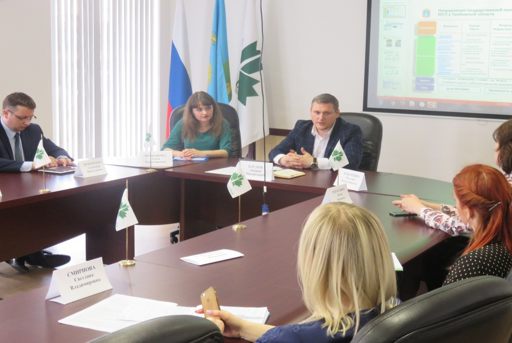
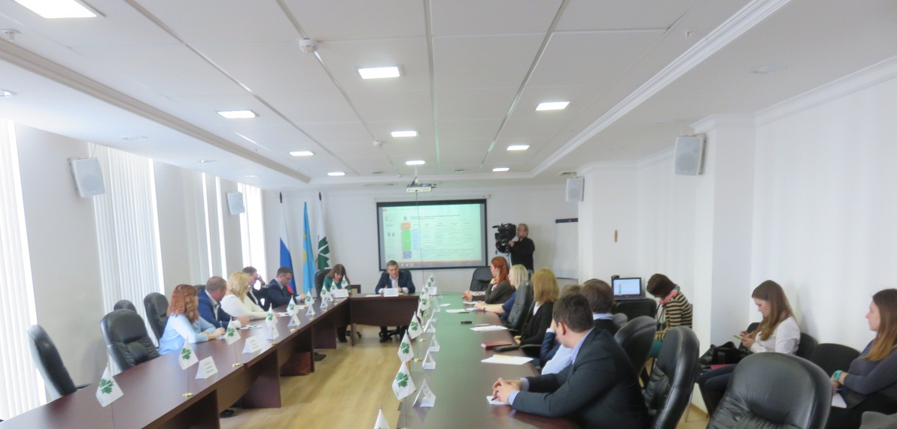

Круглый стол с представителями банков-партнёров
По инициативе АО МК «Фонд содействия кредитованию малого и среднего предпринимательства Тамбовской области» (далее – Фонд) 22 марта 2017 года в здании бизнес-центра «Галерея» был организован круглый стол на тему: «Взаимодействие акционерного общества Микрокредитная компания «Фонд содействия кредитованию малого и среднего предпринимательства Тамбовской области» и банков-партнёров. Повышение качества предоставляемых услуг субъектам малого и среднего предпринимательства».
Развитию малого и среднего бизнеса региональные власти уделяют пристальное внимание. В соответствии с поручением губернатора Тамбовской области Александра Валерьевича Никитина работа в этом направлении будет активизирована.
Перед участниками круглого стола выступил с докладом генеральный директор Фонда Блудов Андрей Михайлович, который рассказал, что благодаря активной работе Фонда малому и среднему бизнесу удалось более 1,2 миллиарда рублей в виде кредитов направить на развитие экономики. Также Фонд вошёл в ТОП-20 по количеству и объёму выданных поручительств.
31 января 2017 года распоряжением Правительства РФ (№ 147) утверждены 12 целевых моделей развития бизнеса на территории РФ. Одна из целевых моделей - поддержка малого и среднего бизнеса. Перед банками и региональными поручителями ставятся задачи по кредитованию бизнеса. Достижение целевых показателей возможно только при их совместной работе. В 2017 году Фонд готов выдать поручительств на 800 миллионов рублей. В прошлом году этот показатель был на уровне 500 миллионов рублей. На сегодняшний день Фонд работает с 18 банками-партнёрами.
В дальнейшем планируется провести индивидуальные семинары по вопросам оказания поддержки в получении кредитных ресурсов, в том числе с использованием гарантийного механизма Фонда, с основными банками-партнёрами.

